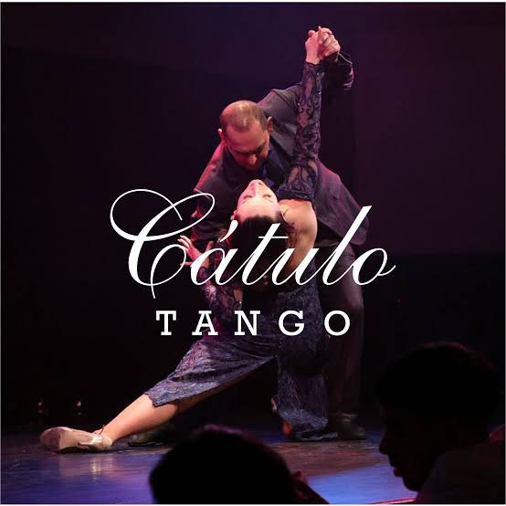
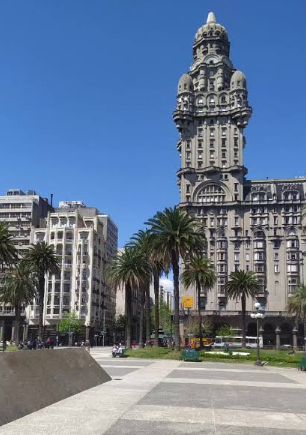
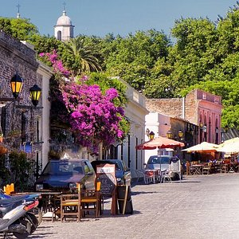
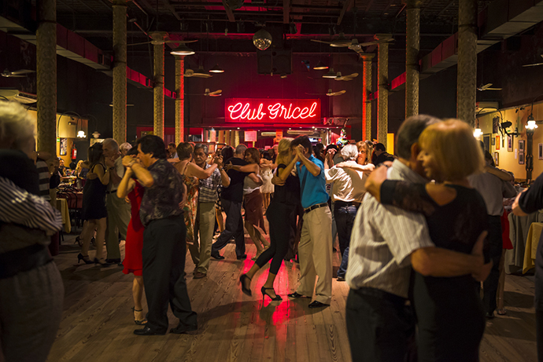
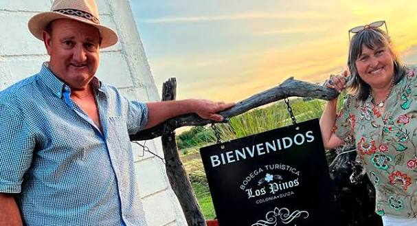

Voyage sur mesure · 14 jours / 13 nuits
Río de la Plata · Le berceau du Tango
De Buenos Aires à Montevideo et Colonia
Demander un devis gratuitUn voyage d'exception au cœur du tango
Conçu pour les danseurs passionnés, ce séjour vous emmène de Buenos Aires à Montevideo. Perfectionnez votre style dans des ateliers avancés avec des maestros renommés, découvrez les milongas les plus emblématiques et laissez-vous inspirer par des spectacles d'exception. Puis, traversez le Río de la Plata vers l'Uruguay, où l'atmosphère plus intime révèle un tango raffiné et authentique.
Les temps forts de votre séjour

🇦🇷 Buenos Aires
- Ateliers et milongas emblématiques
- San Telmo, Recoleta, La Boca
- Spectacles d'exception

💃 Pratique intensive
- Cours privés et pre-milongas
- Maestros locaux renommés
- Perfectionnement et improvisation

🇺🇾 Montevideo
- Tango intime et salons élégants
- Rencontres avec danseurs locaux
- Centre historique et Rambla

🏛️ Colonia del Sacramento
- Ville coloniale classée UNESCO
- Charme intemporel et remparts
- Traversée en ferry depuis BsAs

🎶 Les Milongas
- Gricel, La Catedral, El Beso
- Ambiance authentique porteña
- Pré-milongas et soirées légendaires
- Rencontres avec danseurs locaux

🍷 Vignobles d'Uruguay
- Cépage Tannat, originaire de Gascogne
- Bodegas de Canelones et Colonia Suiza
- Dégustations et paysages viticoles
- Terroir uruguayen d'exception
Le Delta du Tigre
À une heure de Buenos Aires, un paysage unique de canaux, d'îles et de maisons sur pilotis. Une parenthèse idéale entre deux milongas.
Votre itinéraire jour par jour
1ère semaine : Buenos Aires
Arrivée et immersion
Change d'argent (Florida & Lavalle). Achat de chaussures de tango (Flabella). 17h30-19h30 : Práctica à l'Academia Nacional del Tango. Soirée au Bar Paulín.
Microcentro et Histoire
9 de Julio, autour du Congrès, Plaza de Mayo, Av. de Mayo, Edificio Barolo. Pause au Café Tortoni et déjeuner à la Pizzeria Güerrín.
Recoleta et Abasto
Parque San Martín, Cimetière de la Recoleta, librairie El Ateneo. Quartier de l'Abasto : Musée Carlos Gardel ou shopping. Dîner au Rest. del Pilar.
La Boca et le Tango populaire
Av. Almirante Brown, Casa Amarilla, Caminito, Stade Bombonera. Déjeuner au Bodegón Buena Medida.
San Telmo, cœur historique
Parc Lezama, rue Defensa, marché aux puces. Visites : El Zanjón, Casa Mínima. Dîner au célèbre restaurant El Desnivel.
Puerto Madero et modernité
Réserve naturelle Costanera Sur, Frégate Sarmiento, promenade autour des Diques. Dîner dans un restaurant ambulant.
Excursion au Delta du Tigre
Train Mitre jusqu'à Tres Bocas, balade en bateau-bus. Soirée : Milonga "Lo de Celia" (18h00 - 1h00) puis dîner à El Hornero.
2ème semaine : Montevideo, Colonia & Retour
Dernier jour à Buenos Aires
Découverte de Palermo et Soho, Place Cortázar. Pré-milonga à 19h30, puis soirée au Salon Marabu ou La Nacional.
Traversée vers l'Uruguay
7h30-10h00 : Ferry Buenos Aires → Montevideo. Change d'argent. Visite de la Vieille Ville, Cabildo, Palacio Salvo. Soirée : Lo de Bebe.
Montevideo historique
Vieille Ville, ligne 706, Place Indépendance, Av. 18 de Julio. Visite du Musée du Tango et dîner dans un restaurant de quartier.
Culture et Marché
Palacio Taranco, Cathédrale. Cours de tango à 18h00. Soirée et dégustation au Marché du Port.
Palermo et Rambla
Parque Rodó, balade sur la Rambla. Déjeuner à 13h30, cours de tango l'après-midi, temps libre et visite du Marché Ferrando.
Forteresse du Cerro
Visite de la Forteresse du Cerro avec vue panoramique. 18h00 : Location de minivan pour un dîner de quartier.
Vignobles et Retour
Matinée : Vignoble Los Pinos (Nueva Helvecia). 10h16-11h31 : Traversée en ferry Colonia → Buenos Aires. Despedida du groupe et retour vers la France.
Le Río de la Plata
Entre Buenos Aires et Montevideo, ce fleuve immense relie deux cultures tango. Une traversée en ferry, un moment suspendu entre deux rives.
Avant le départ & sur place
📄 Administratif
Passeport valide 6 mois après le retour. Pas de vaccins obligatoires.
🗣️ Langue & Décalage
Espagnol. Décalage horaire : -4h ou -5h (pas d'heure d'été en Uruguay).
💰 Monnaie
Peso argentin (ARS) & peso uruguayen (UYU). Conseil : ne pas changer à l'aéroport.
🎒 Conseils pratiques
- Chaussures : Bonnes chaussures de ville + chaussures de tango
- Tenue : Correcte et élégante pour les milongas et shows
- Électricité : 110V/220V, normes UE également présentes
- Sac léger : Sac à dos pour les sorties (appareil photo, eau...)
Votre itinéraire sur la carte
De l'effervescence de Buenos Aires au charme colonial de l'Uruguay : cliquez sur chaque point doré pour découvrir les étapes de votre voyage.
Prêt à danser sur les rives du Río de la Plata ?
Construisons ensemble votre itinéraire sur mesure entre Buenos Aires, Montevideo et Colonia.
Parlons de votre projet →